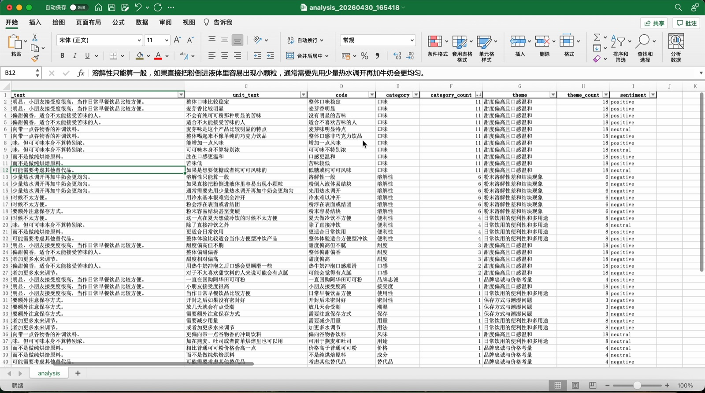
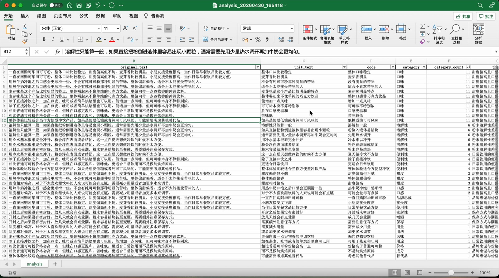
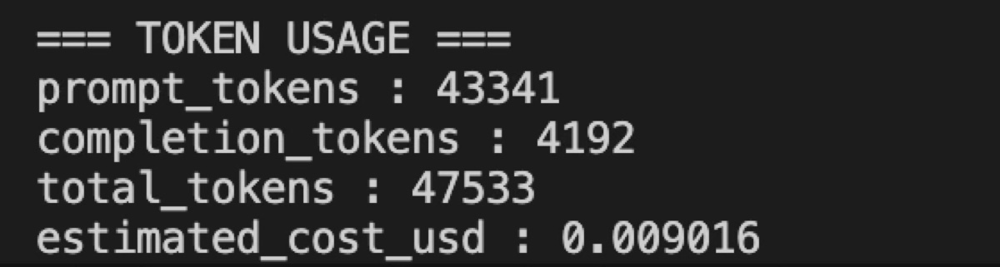

把非结构化的用户反馈自动转成可统计的结构化数据——每条反馈被拆成最小语义单元，逐层编码为 code → category → theme，并附情感标签，替代逐条人工阅读标注。
用户反馈、评论、访谈逐字稿这类数据以自然语言为主，内容分散、表达不统一，无法直接做分组统计或问题归纳。传统做法依赖人工逐条阅读和标注：成本高，而且不同人、不同批次的标注口径不一致。
工具的目标是把这一步自动化，产出统一口径的结构化数据，供后续分析使用。
适用于电商评论、用户反馈收集、问卷开放题、访谈文本的初步整理。使用者是需要处理用户反馈的数据分析师、用户研究员和产品经理。
这是这个工具最重要的设计约束。
不输出结论，不做因果推断。 theme 被限定为「对数据中重复模式的描述」，不做解释性扩展。
原因：整个流程只有文本数据，没有额外变量也没有验证机制，不具备判断因果的条件。自动生成的解释性结论无法被验证，一旦不准确，反而比没有结论更糟——它会让使用者以为自己已经知道了原因。
所以工具只负责把数据整理到「可观察事实」这一层，insight 留给后面的人工分析。
LLM 不参与数值计算、流程控制和最终聚类决策。 这三件事全部由 Python 和传统算法完成，理由见下文「关键设计决策」。
输入一个 txt 文件（每行一条反馈，不需要预先清洗），运行主程序，得到一个 Excel。
每行对应一个最小语义单元，字段包括：
| 字段 | 含义 |
|---|---|
unit_text |
拆分后的最小语义单元 |
code |
对该单元的简化表达（3–8 词短语） |
category |
该表达所属的问题类型 |
category_count |
该类型在整体数据中出现的次数 |
theme |
对一组 category 的总结性描述 |
theme_count |
该 theme 覆盖的数量 |
sentiment |
positive / neutral / negative |
同时导出 codebook.json（全部 code 留档）和一份 token
使用与成本统计。
使用建议：先看 category_count 和
theme_count
定位高频问题，再抽样回看原始文本验证分类是否合理。
实际输出（示例数据为公开电商评论）：

同一张表向左看，可以对照每条原始评论被拆成了哪些语义单元：

原始文本
→ 语言检测（中/英，控制后续输出语言一致）
→ 全局信号提取（Global Signals）
→ 语义单元拆分
→ 单元级分析（相关性判断 → code 生成 → 情感分类）
→ code 向量化
→ 层次聚类
→ category 命名
→ category 分组 → theme 生成
→ 结果回填到每个 unit + 频次统计
→ Excel / codebook 输出| 模块 | 选型 | 理由 |
|---|---|---|
| LLM | GPT-4o-mini | 成本低，能力足够 |
| Embedding | text-embedding-3-small | 成本低，支持中英文 |
| 聚类 | AgglomerativeClustering | 不需要预设簇数 |
选型以成本为主要约束。流程内置 token 与成本统计，单次运行的实际开销：

每一个 LLM 调用的 prompt 都遵循同一套结构：
统一结构的目的是提高稳定性、降低 hallucination、保证跨步骤一致。
四层各自承担不同的抽象职责——unit 保留最小语义表达，code 贴近原文做局部概括，category 统一到单一维度，theme 描述跨 category 的整体模式。
不在同一层里混合具体表达和高层概念，是为了让分析结构可解释、可追溯。
问题：句子被拆成 unit 之后，单个 unit 常常无法被独立理解。
做法：在拆分之前先对整句提取结构化的语义信号（行为、评价、使用场景、期望落差等），作为共享上下文输入到后续每一个子任务——拆分、相关性判断、code 生成、情感分类都能看到它。
这个设计参考了 Transformer 中 attention 的思路：让每一步都能访问全局语义参照，而不是只看局部片段。效果是减少了单步理解偏差，跨步骤的编码一致性明显提升。
把「语义理解」和「结构决策」解耦，是因为 LLM 在结构性任务上不稳定——同样的输入多跑几次会给出不同的分组。而聚类结果一旦不稳定，后面所有层级都会跟着漂。
如果让 LLM 一次完成拆分 + 判断 + 打标 + 抽象：
拆成独立模块后：每一步输入输出明确、可以单独校验和修正、可以只替换出问题的那一步。
而且多步调用更贴近人工分析的真实路径——读 → 判断 → 标注 → 归纳。本质上是把人的 workflow 映射成机器流程。
通过 prompt 限定模型只关注与研究目标相关的维度（产品属性、使用方式与场景、用户评价与感受），排除无关信息、过度解释和偏离任务的描述。
目的是让输出始终围绕预设的研究问题，减少噪声干扰编码结果。
category 和 theme 生成后回填到 unit 级数据，形成
unit → code → category → theme 的完整链路。
每一条抽象结论都能追回到具体的原始文本，便于验证——这也是「不做因果推断」之外的另一重可信度保障。
坦白说明，这些在设计上没有被解决：
结果不建议直接作为结论使用。 它是结构化的中间产物，最终判断需要结合业务背景和人工分析。
引入 Global Signals —— 对应人工做编码之前先通读熟悉文本的过程。原来直接拆分再编码，unit 脱离上下文后经常被误读。
第一次聚类改用算法 —— 原本让 LLM 做归类分组，不稳定性极高，同样输入结果不一致。改成基于语义相似度的层次聚类后可复现。这是「LLM 与算法职责分离」这条原则的来源。
中英文支持 —— 为扩展使用场景加入中文识别。初期中文效果明显弱于英文，通过优化 prompt 让流程不依赖模型对特定语言的熟悉度。
代码本身用 AI 辅助完成，分工是：
这样分工是因为直接让编码模型改代码容易出现误改、漏改和理解偏差；先用一个模型把需求约束清楚，再交给另一个执行，出错率明显下降。